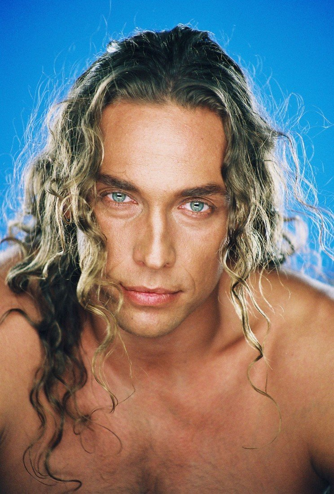

"Правда 24": Шоумен Тарзан - о своем творчестве
рейтинг: 8.1/10
год: 2014
режиссер: Кристофер Ноланс
Описание

Гость программы "Правда 24" - шоумен Сергей Глушко, в миру известный под псевдонимом Тарзан. В интервью он рассказал о своей деятельности и том, что он ни разу не раздувал скандалы с целью привлечь к себе внимание прессы.
ВЕЛИЧАЙШИЕ МАТЧИ ДЕСЯТИЛЕТИЯ НА ЧЕМПИОНАТЕ МИРА
рейтинг: 8.1/10
год: 2014
режиссер: Кристофер Ноланс
Описание
ВЕЛИЧАЙШИЕ МАТЧИ ДЕСЯТИЛЕТИЯ НА ЧЕМПИОНАТЕ МИРА. ЛУЧШИЕ МАТЧИ В ИСТОРИИ ЧМ В ФУТБОЛЕ
Чм. Чемпионат Мира. Чм18. Чемпионат Мира 2014. Чм в россии. Футбол 2020. Футбол 2019
Самые лучшие и незабываемые матчи за это десятилетия на прошедших трёх чемпионатах мира. Величайшие матчи на ЧМ,10, ЧМ14, ЧМ18. В видео вы увидите такие матчи как:
Отзывы об интервью
Сергей
Отличный фильм, 3 часа. Спасибо за совет. Попробую на себе.
После фильма Начало, я с не терпением ждал еще работ от Кристофера Нолана. Интерстеллар меня впечатлил.
Leon
После фильма Начало, я с не терпением ждал еще работ от Кристофера Нолана. Интерстеллар меня впечатлил.